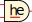

harte echtzeit (HE) is a scientist whos mind is bend in a strange sort of emotional way which allows for inspiration to flow. he is working with algorithms, data, live coding and music since 2022. a series of gravitational wave field recordings is HEs first album-length performance. he is loosely related to German live coding hubs such as LOL2 in Leipzig as well as Toplap Düsseldorf and organizes algoraves, workshops and other events himself.
=>sonic experiments
gravitational waves
it took about 100 years for Einsteins prediction to become true, but in 2015 gravitational waves were detected for the first time by the Advanced LIGO instrument. these waves coming from the depths of space, carry energy and information about the history of the universe and hit us on a daily basis. with my project Gravitational Wave Field Recordings (GWFR), I use audio samples of detected gravitational waves and transform them into musique concréte-inspired pieces of sonic art. by utilizing techniques of live coding, I perform music with computer code which conveys the history of gravitational wave detection and the deep space. the music helps us to travel through space and time with rhythmic patterns, mysterious sound textures and experimental structures. the tracks explore space and time in a minimal yet sometimes dreamy as well as danceble way. demo tracks can be found here, the project started in 2023 and is currently part of my live set. it is not yet released as a record.
what is a nanoloop?
nanoloop is a neat and minimal graphic step sequencer for the Gameboy plattform written by Oliver Wittchow. many thanks to oliver for the tool.
currently, I'm exploring what a nanoloop means and how I want to work with it. some tracks are written and might get recorded soon.
=>live
- 2024-04-20 GW live set @ VIU festival, Sala Vol, Barcelona/ES
- 2024-03-30 jaming GW @ z-Labor hackerspace Zwickau/GER
- 2024-02-23 GW live set @ Toplap20 stream, online [video]
- 2024-02-09 radio appearence with Track GWFR01 @ Schrill radio show on Radio Dreyeckland [recording]
- 2023-12-12 experiments with ORCA and audience @ X-mas Beats'n'bits algorave, Zwickau/GER
- 2023-05-19 together with my friend MC Algorhythm as Glitchcore Brüder @ Critical Rave, Seilerstraße Zwickau/GER
- 2023-04-30 together with my friend MC Algorhythm as Glitchcore Brüder @ Viele Wege Festival, Kunstverein Freunde Aktueller Kunst, Zwickau/GER
- 2022-08-26 sonic experiments solo and with my friend MC Algorhythm as Glitchcore Brüder @ Nerd Arts Night, Kunstplantage Zwickau/GER [video solo, video 2gether]
=>tools
from time to time, I develop small tools with regards to music and art. feel free to play with them.
not-a-notation
This is a notation for Tidal Cycles which helps me to write tracks for live playing and recording without taking away the live coding part. it is designed to work on paper and as a plain-text file which uses the ending .nan. please find it on in this repository.